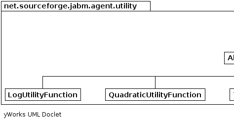
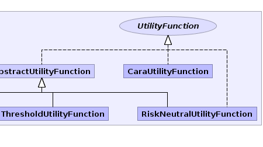

|
|||||||||
| PREV PACKAGE NEXT PACKAGE | FRAMES NO FRAMES | ||||||||
See:
Description
| Interface Summary | |
|---|---|
| UtilityFunction | |
| Class Summary | |
|---|---|
| AbstractUtilityFunction | |
| CaraUtilityFunction | |
| LogUtilityFunction | |
| QuadraticUtilityFunction | |
| RiskNeutralUtilityFunction | |
| ThresholdUtilityFunction | |
Classes defining utility functions for agents.
|  |  |
|
|||||||||
| PREV PACKAGE NEXT PACKAGE | FRAMES NO FRAMES | ||||||||